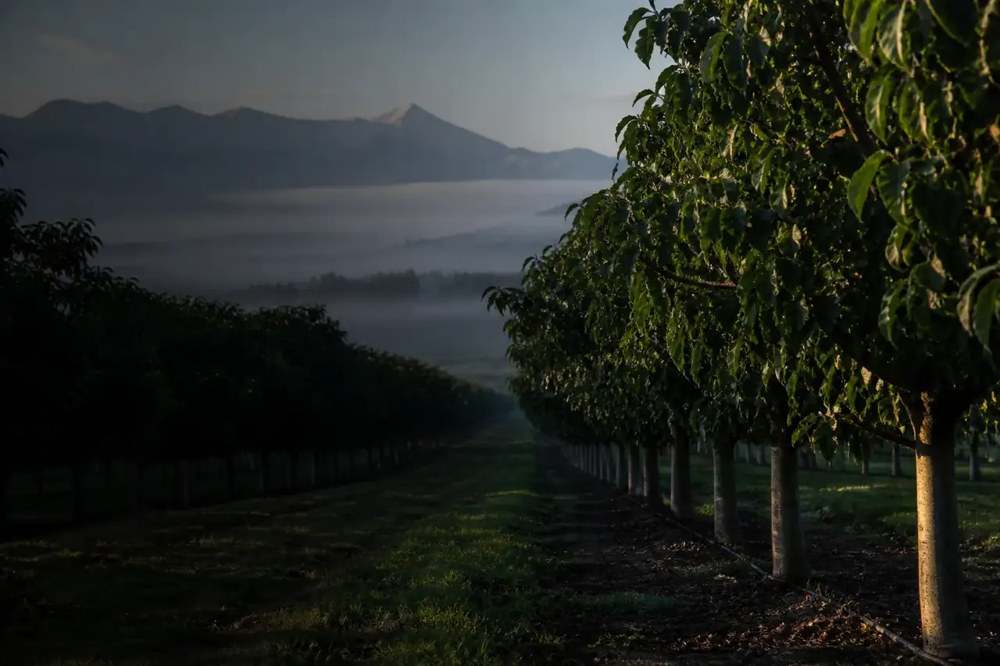

Validado
TransversalClaves para leer una referencia de exportación
Guía sobre fuente, periodo, unidad y límites de comparación.

Busque por especie y nivel de revisión editorial.
Guía sobre fuente, periodo, unidad y límites de comparación.
Plantilla para ordenar antecedentes productivos y comerciales.
Marco de lectura para calibre, color, condición y formato.
Estructura comparativa de disponibilidad y origen.
Variables mínimas para observar industria y comercio.
Cómo se etiqueta cada contenido antes de integrarlo.
Pruebe otra palabra o restablezca los filtros.
Proponer no garantiza publicación: todo contenido pasa por revisión editorial.